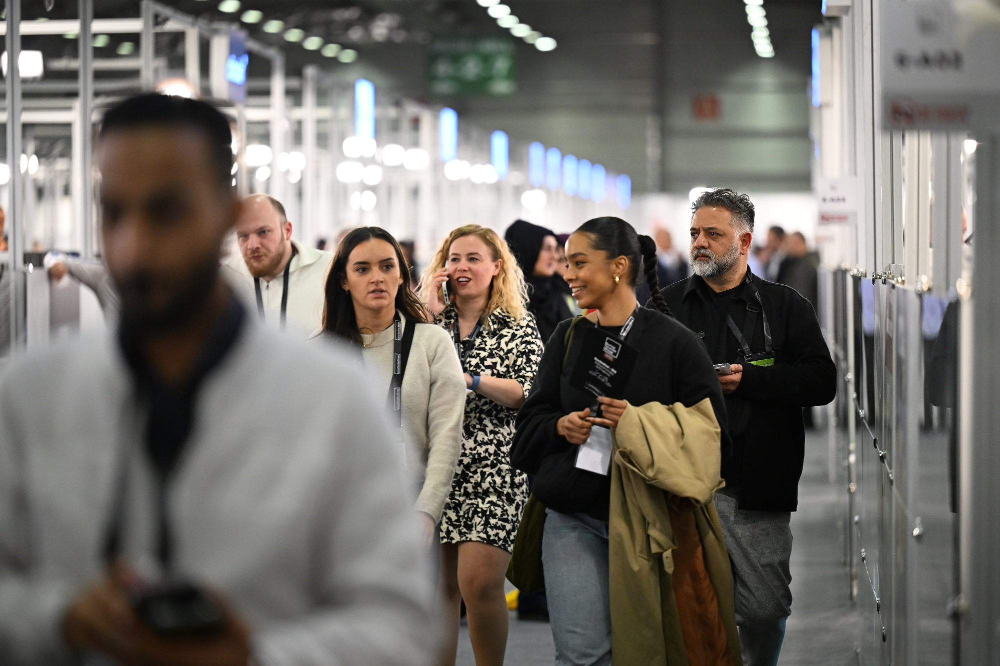

Türkiye ekonomisinin lokomotif sektörlerinden olan tekstilde dış ticaret hacmine güç katan Bursa Textile Show Fuarı sona erdi. Bursa Uluslararası Fuar Merkezi’nde düzenlenen Bursa Textile Show Fuarı’na 2 ayrı salonda 80’i aşkın firma katıldı. Fuarda ayrıca trend alanları ve ilham verici seminerlerle katılımcılara sektördeki son yenilikleri keşfetme imkanı sunuldu.
BTSO öncülüğünde yürütülen Giysilik Kumaş UR-GE projeleri kapsamında B2B organizasyonunda ise yabancı iş profesyonelleri Bursalı firmalarla iş görüşmesi gerçekleştirdi. Fuara, başta Avrupa, Afrika, Türk Cumhuriyetleri ve Orta Doğu ülkelerinden olmak üzere dünyanın dört bir yanından ziyaretçiler geldi.
Fuar katılımcılarından Marsala Tekstil firması Pazarlama Direktörü Özlem Özel, Bursa Textile Show Fuarı’na ikinci kez katıldığını belirterek, fuarda beklentilerinin üzerinde ziyaretçi yoğunluğu ile karşılaştıklarını söyledi. Özel, “Üretimimizin yüzde 80’inini ihraç ediyoruz. Firma olarak fuardan memnunuz. 3 gün boyunca Rusya, Almanya, İspanya, İngiltere gibi farklı ülkelerden ziyaretçilerle görüşmeler gerçekleştirdik.” diye konuştu.
Melba Tekstil firmasından Bahadır Yaşbey, fuara ilk defa katıldıklarını söyledi. Fuarın alanı ve atmosferinin güzel hazırlandığını belirten Yaşbey, “Fuarda yabancı alıcılardan yoğun ilgi gördük. İlerleyen dönemlerde fuarın daha iyi noktaya geleceğine inanıyorum. Bu sene fuarda özellikle Rusya, Beyaz Rusya, Ürdün’den alıcılar ağırladık. Siparişlerimizi de aldık. Bizim için olumlu bir fuar oldu.” dedi.
Tende Tekstil firmasından İsmail Hasırcı, fuarın düzenlendiği ilk yıldan bu yana katılımcı olarak yer aldıklarını belirterek, “Özellikle bu sene Avrupa ve Balkanlar ağırlıklı olmak üzere birçok firma ile bağlantılar kurduk. Bizim için en önemli konu network. Bu konuda Bursa Textile Show bizlere büyük fırsatlar sağlıyor” diye konuştu.
Belçika’da tekstil sektörünün önemli firmalarından Tonickx’in tasarımcılarından Anton Frans, “Uzun süredir Türkiye’den ürün alıyoruz. Bursa’da işbirliği yaptığımız birçok firma var. Bursa’ya 2. kez geldim. Bu fuar bizim için çok önemli çünkü çalıştığımız tüm firmaları aynı mekanda görebiliyoruz.” dedi.
Bursa Textile Show Fuarı’nda keten ve dokuma kumaş siparişi vererek ülkesine döneceğini söyleyen, Mısır’lı firma yetkilisi Menna Shalaby, “Fuarda dünyanın her coğrafyasından firmalar var. Kumaş kalitesi Bursa’da çok iyi konumda.” ifadelerini kullandı. Ukrayna’da faaliyet gösteren Promo Tex firmasından Antonina Pasichnyk, kadın giysi üretimi için kumaş tercihlerinin Bursa’dan olmasını istediğini belirterek, fuarda yeni iş bağlantıları kurduğunu söyledi. BTSO’nun iştiraki KFA Fuarcılık AŞ organizasyonuyla düzenlenen fuara, Ticaret Bakanlığı, KOSGEB ve UTİB de destek veriyor.